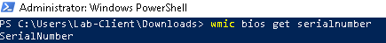

Introduction: What is PowerShell?
PowerShell is a powerful command-line shell and scripting language built on .NET (and .NET Core for cross-platform PowerShell). Designed for admins and power users, it automates tasks, manages configurations, and interacts with APIs, the registry, and the file system. Unlike traditional text-based shells, PowerShell is object-based—commands pass rich objects, not just text—unlocking precise filtering, formatting, and automation.
Getting Started with PowerShell
- .NET and .NET Core foundations
- Windows PowerShell vs PowerShell (Core)
- Cmdlets, basic syntax & structure
- Working with files and directories
- Scripting basics (types, control flow, functions)
- Real-world examples
.NET and .NET Core Foundations
.NET Framework
The .NET Framework provides PowerShell with the CLR runtime and vast class libraries. When you run Get-Process, format with Select-Object, or manage services, you're leveraging .NET types and methods under the hood—enabling rich, object-first automation.
- Libraries: file I/O, networking, services, UI, and more
- CLR runtime: execution, memory, exception handling
- Objects: structured data instead of flat text
.NET Core
.NET Core (now .NET 6/7/8+) powers cross-platform PowerShell (a.k.a. PowerShell Core). It's modular, fast, and open source—ideal for modern automation across Windows, Linux, and macOS.
- Cross-platform: consistent scripts on Windows/macOS/Linux
- Performance & modularity: lean runtime and libraries
- Open source: rapid improvements, community modules
Windows PowerShell and PowerShell (Core)
Windows PowerShell
- Version: 5.1 (final)
- Platform: Windows-only
- Runtime: .NET Framework
- Compatibility: deep Windows integration & legacy APIs
PowerShell (Core)
- Version: 6.x/7.x (current is 7 line)
- Platform: cross-platform (Windows, macOS, Linux)
- Runtime: .NET Core / .NET 5+
- Notes: faster & modular; some Windows-only features differ
Cmdlets & Basic Syntax and Structure
Cmdlets are small, purpose-built commands that follow a clear Verb-Noun pattern and output objects. They're the building blocks of PowerShell automation.
Naming Format
| Verb | Noun | Meaning |
|---|---|---|
| Get- | Help | Displays help for cmdlets |
| Get- | Command | Lists available commands |
| Get- | Process | Show running processes |
| Get- | Service | Show services |
| Start- | Service | Start a service |
| Restart- | Service | Restart a service |
| Stop- | Service | Stop a service |


Exploration
$PSVersionTable
Get-Module -ListAvailable
Get-Command -Module ModuleName
Get-FileHash
Get-FileHash -Algorithm SHA1 -Path
Get-NetAdapter
Select-Object
Get-NetAdapter | Select-Object Name, Status, LinkSpeed
Set-NetFirewallRule -DisplayGroup "File and Printer Sharing" -Enabled True
Get-NetFirewallRule -DisplayGroup "Network Discovery"
(Get-WmiObject -Query 'select * from SoftwareLicensingService').OA3xOriginalProductKey
wmic bios get serialnumber
New-NetFirewallRule -DisplayName "Block Specific IP" -Direction Inbound -Action Block -RemoteAddress "192.168.1.100" -Protocol Any
New-NetFirewallRule -DisplayName "Block Specific IP Outbound" -Direction Outbound -Action Block -RemoteAddress "192.168.1.100" -Protocol Any
Get-ComputerInfo | Select-Object WindowsProductName, WindowsVersion
net users
net groups
net user administrator
Get-LocalGroupMember -Group "Administrators"
Remove-LocalGroupMember -Group "Administrators" -Member "Domain Users"Get-Module -ListAvailable


Command Discovery Across Modules


Networking & Hash Basics


Firewall Rules & Discovery


Retrieve Computer Serial Number

Block IP Inbound/Outbound
New-NetFirewallRule -DisplayName "Block Specific IP" -Direction Inbound -Action Block -RemoteAddress "192.168.1.100" -Protocol Any
New-NetFirewallRule -DisplayName "Block Specific IP Outbound" -Direction Outbound -Action Block -RemoteAddress "192.168.1.100" -Protocol AnyGet-ComputerInfo & Selected Properties


Local Users & Groups

Modern Local Group Cmdlets


Working with Files and Directories
Get-ChildItem
New-Item
Remove-Item
echo
mkdir
Move-Item
Copy-Item
lsThe familiar Linux-style commands like mkdir, echo, and ls also work in a PowerShell session.


PowerShell Scripting Basics
Core building blocks that underpin automation and administration with PowerShell.
Data Types (Variables, Strings, Integers)


Arrays

Booleans


Loops and Conditional Statements

Objects


Functions
function Greet-User {
param ($Name)
"Welcome, $Name!"
}
Greet-User -Name "Dave"


Scripts end with the .ps1 extension.
Permissions and Execution Policy
Get-ExecutionPolicy
Set-ExecutionPolicy RemoteSigned
Policies: Restricted · AllSigned · RemoteSigned · Unrestricted
Administrator privileges may be required.
Useful Tools and Debugging
Write-HostvsWrite-OutputStart-Transcriptto log sessionstry/catch/finallyfor error handling
Write-Host vs Write-Output


Start-Transcript

try / catch / finally


Real-World Use Cases
- Batch user creation in AD
- Automating updates
- Backing up and archiving logs
- Scheduled tasks and reporting
Batch User Creation in AD
Create a CSV with user attributes, then run a script to provision users in bulk.


Automating Updates


Backing Up and Archiving Logs

Scheduled Tasks and Reporting


PowerShell gives IT pros control and automation that save time, reduce errors, and improve reliability. Mastering the fundamentals is step one toward serious automation chops.
PowerShell is a trademark of Microsoft Corporation. This content is for educational purposes and is not affiliated with or endorsed by Microsoft.